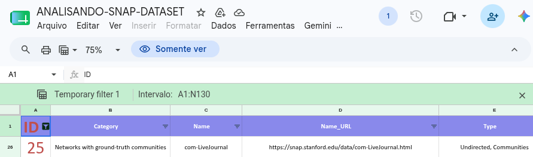
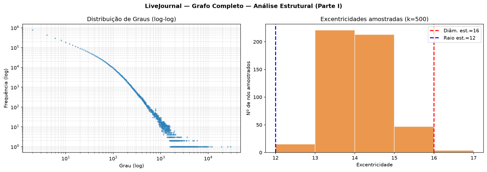
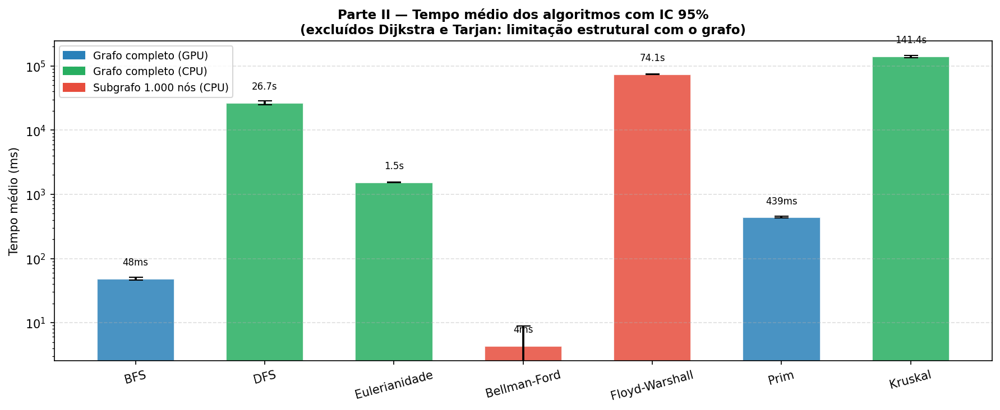
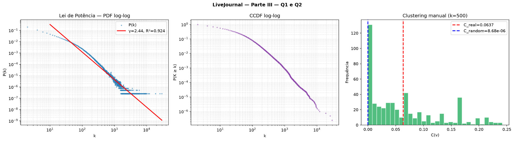
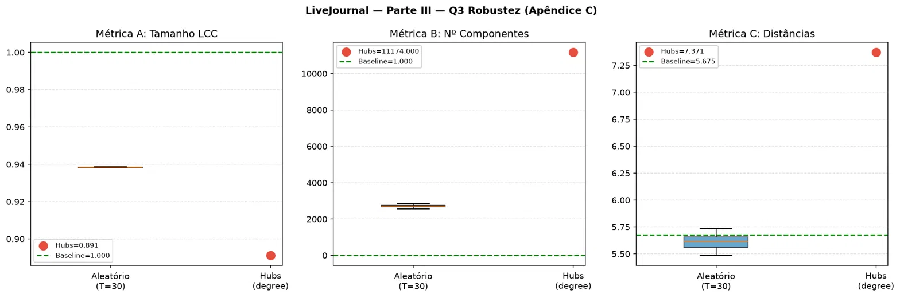

1 Análise Estrutural e Algorítmica da Rede Social LiveJournal
Relatório de Experimento - Teoria dos Grafos (MATA53)
Redes Sociais, Análise de Grafos, RAPIDS cuGraph, Computação Paralela, GPU
Você pode fazer o download da versão formatada em PDF deste artigo aqui: relatorio.pdf
2 Cálculo de Determinação do Grafo a ser Utilizado
De acordo com a regra de mapeamento determinada nas orientações do trabalho, dado o número de matrícula \(M\), o ID do grafo a ser selecionado é dado por: \[ f(M) = ((\text{soma dos dígitos de } M) \times (\text{últimos 2 dígitos de } M + 1)) \bmod 129 \]
Para a matrícula 224115861: - Soma dos dígitos = \(2 + 2 + 4 + 1 + 1 + 5 + 8 + 6 + 1 = 30\) - Últimos dois dígitos = \(61\)
O cálculo resultante é: \[ f(M) = (30 \times (61 + 1)) \bmod 129 = (30 \times 62) \bmod 129 = 1860 \bmod 129 = 25 \]
Conforme o ID obtido na planilha de referência, o conjunto de dados correspondente é o “LiveJournal social network and ground-truth communities”, pertencente à categoria de redes sociais e comunidades ground-truth, caracterizado por ser um grafo não direcionado com comunidades reais.

O código-fonte completo deste projeto, incluindo scripts de processamento e execução dos experimentos, está disponível no GitHub: - Repositório: https://github.com/Carolbalbs/tp-final
3 Descrição do Grafo Original
O conjunto de dados utilizado neste trabalho foi o LiveJournal social network and ground-truth communities, disponibilizado pelo Stanford Network Analysis Project (SNAP) (Yang and Leskovec 2012). Trata-se de uma das maiores redes sociais não direcionadas disponíveis publicamente, contendo 3.997.962 nós e 34.681.189 arestas, onde os nós representam usuários e as arestas indicam conexões de amizade.
O LiveJournal é uma comunidade virtual na qual os usuários mantêm blogs, diários e interagem entre si. O dataset modela essa rede e fornece informações sobre comunidades reais estruturadas de forma implícita pelas interações dos usuários. A análise exata de suas propriedades estruturais (como diâmetro) ou o cálculo de caminhos mínimos de todos para todos (complexidade \(O(V^3)\) ou \(O(V^2 E)\)) é inviável em sistemas CPU tradicionais devido à escala da rede.
Por esse motivo, neste trabalho, adotou-se o uso de processamento paralelo em GPU por meio da biblioteca cuGraph (suíte NVIDIA RAPIDS), o que permitiu obter métricas globais e executar buscas no grafo completo em frações de segundo.
As informações básicas fornecidas no repositório do SNAP sobre o dataset são descritas nas tabelas a seguir.
| Arquivo | Conteúdo |
|---|---|
com-lj.ungraph.txt |
Grafo de amizade completo |
com-lj.top5000.cmty.txt |
Top 5000 comunidades |
com-lj.all.cmty.txt |
Todas as comunidades |
| Métrica | Valor Oficial (SNAP) |
|---|---|
| Coeficiente médio de clusterização | \(\approx 0,284\) |
| Diâmetro | \(17\) |
| Diâmetro efetivo (90%) | \(\approx 6,5\) |
| Triângulos | \(\approx 177.820.130\) |
A análise inicial dessas métricas revela uma rede densamente agrupada localmente, com forte presença de comunidades e caminhos médios curtos (propriedade small-world), características típicas de grandes redes sociais online.
4 Metodologia
4.1 Dataset e Formato de Entrada
O arquivo do grafo (com-lj.ungraph.txt) foi lido no formato de lista de adjacências contendo dois inteiros por linha separados por tabulação.
4.2 Ambiente Computacional
Os experimentos foram conduzidos em um servidor pertencente à infraestrutura do projeto BAMBU Lab (Rede Metropolitana para Experimentação e Inovação da Internet do Futuro), sediado na Universidade Federal da Bahia (UFBA).
O hardware utilizado consistiu em: - Placa de Vídeo (GPU): 2x NVIDIA RTX A4000 (16 GB de VRAM cada), utilizando exclusivamente a GPU de índice 1 (via variável de ambiente CUDA_VISIBLE_DEVICES=1). - Sistema Operacional: Linux (Ubuntu 22.04) - Tecnologias Core: CUDA 12.6, Drivers NVIDIA 560.35.03, Python 3.10 em container virtual gerenciado via Podman.
As principais bibliotecas de software empregadas foram: - cuDF e cuGraph (versão 24.xx): para manipulação paralela de dados e execução de algoritmos acelerados em GPU. - NetworkX (versão 3.4): utilizada como fallback na CPU para algoritmos sem suporte de hardware. - NumPy, SciPy e Matplotlib: para processamento estatístico, cálculos de intervalo de confiança e plotagem.
Para evitar vazamentos de memória na GPU e na CPU entre execuções repetidas, chamadas explícitas de coleta de lixo (gc.collect()) foram inseridas nos scripts após cada medição.
4.3 Procedimento de Análise Estrutural
As propriedades estruturais básicas do grafo completo foram calculadas diretamente sobre a GPU. Para as métricas que dependem de caminhos mínimos globais (como diâmetro, raio e distância média), as quais possuem custo computacional proibitivo de \(O(V \cdot E)\) na GPU, aplicou-se uma metodologia de amostragem aleatória com \(k = 500\) nós de origem.
Para cada nó da amostra, executou-se uma busca em largura (BFS) e armazenou-se a excentricidade e a distribuição de caminhos mais curtos. Os valores estatísticos reportados foram calculados com base nessa amostra, acompanhados de intervalos de confiança de 95%.
4.4 Avaliação de Algoritmos
Implementou-se a medição de tempo dos seguintes algoritmos: BFS, DFS, verificação de Eulerianidade, Dijkstra, Bellman-Ford, Floyd-Warshall, Tarjan, Prim e Kruskal. - Algoritmos com complexidade linear ou quase linear no número de arestas (\(O(V+E)\) ou \(O(E \log V)\)) foram executados sobre o grafo completo (e.g., BFS, DFS, Eulerianidade, Prim, Kruskal). - Devido às elevadas complexidades de Bellman-Ford (\(O(V \cdot E)\)) e Floyd-Warshall (\(O(V^3)\)), suas execuções foram realizadas em um subgrafo induzido de 1.000 nós selecionados aleatoriamente, preservando a conectividade. - Algoritmos que exigem pesos (como Dijkstra) ou direcionalidade (como Tarjan) não foram medidos no benchmark de desempenho por limitações estruturais do grafo LiveJournal (não direcionado e não ponderado). - Para cada algoritmo avaliado, realizaram-se 30 execuções independentes (\(n = 30\)) variando a origem de forma aleatória, calculando-se média, desvio padrão e Intervalo de Confiança (IC) de 95% através da aproximação normal (Z), visto que \(n \geq 30\).
5 Resultados Obtidos
5.1 Tratamento dos Dados
Antes do início dos cálculos, os seguintes passos de limpeza e tratamento foram aplicados: 1. Carregamento do arquivo de arestas via cuDF e inicialização do objeto Graph no cuGraph. 2. Verificação de auto-laços: não foram encontrados auto-laços no dataset original (0 arestas removidas). 3. Componentes conexas: confirmou-se que o grafo original é composto por uma única grande componente conexa (LCC) abrangendo todos os 3.997.962 nós. 4. Conversão de estruturas de dados para compatibilidade com o NetworkX (CPU) nos algoritmos específicos.
5.2 Análise Estrutural do Grafo Completo
As métricas estruturais exatas e estimadas por amostragem obtidas neste trabalho estão sumarizadas na Table 5.1.
| Métrica | Valor Computado | Método / Detalhe |
|---|---|---|
| Número de vértices | 3.997.962 | Exato (GPU) |
| Número de arestas | 34.681.189 | Exato (GPU) |
| Grau mínimo | 2 | Exato (GPU) |
| Grau máximo | 29.630 | Exato (GPU) |
| Grau médio | 34,6989 | Exato (GPU) |
| Grau mediano | 12,0 | Exato (GPU) |
| Densidade | \(4,34 \times 10^{-6}\) | Exato (GPU) |
| Nº componentes conexas | 1 | Exato (GPU) |
| Tamanho da LCC | 3.997.962 | Exato (GPU) |
| Diâmetro (LCC) | \(\approx 16\) | Amostragem (\(k=500\) na GPU) |
| Raio (LCC) | \(\approx 12\) | Amostragem (\(k=500\) na GPU) |
| Comprimento médio (LCC) | \(5,5592 \pm 0,6265\) | Amostragem (\(k=500\)) |
| IC 95% comprimento médio | \([5,5043; 5,6141]\) | Normal (Z, \(n=500\)) |
| Coef. clusterização médio | 0,061295 | Exato (GPU) |
| Número de triângulos | 177.820.130 | Exato (GPU) |
O diâmetro estimado de 16 obtido pela nossa amostragem está muito próximo ao valor de referência oficial de 17. O comprimento médio dos caminhos (\(\approx 5,56\)) confirma que, em média, quaisquer dois usuários estão separados por menos de 6 conexões de amizade.

A Figure 5.1 apresenta as distribuições visuais de graus e caminhos mais curtos: - Painel esquerdo: A distribuição de graus plotada em escala log-log revela um decaimento linear marcante, indicando uma distribuição de graus que segue uma lei de potência (propriedade scale-free). A maioria dos usuários possui grau baixo (mediana de 12), enquanto um número pequeno de hubs acumula dezenas de milhares de conexões de amizade (grau máximo de 29.630). - Painel direito: A distribuição de excentricidades calculada para a amostra de 500 nós concentra-se no intervalo de 13 a 15, com pouca variação, confirmando que a maioria dos vértices está a distâncias bastante similares do centro de gravidade da rede.
5.3 Desempenho dos Algoritmos
A Table 5.2 apresenta os resultados empíricos das medições de tempo de execução no benchmark de algoritmos.
| Algoritmo | Complexidade | Média (ms) | IC 95% (ms) | Escopo / Dispositivo |
|---|---|---|---|---|
| BFS | \(O(V+E)\) | 48,34 | \([45,73; 50,95]\) | Grafo completo (GPU) |
| DFS | \(O(V+E)\) | 26.679,76 | \([24.855,80; 28.503,72]\) | Grafo completo (CPU) |
| Eulerianidade | \(O(V+E)\) | 1.533,44 | \([1.526,62; 1.540,26]\) | Grafo completo (CPU) |
| Bellman-Ford | \(O(V \cdot E)\) | 4,40 | \([-0,39; 9,20]\) | Subgrafo 1.000 nós (CPU) |
| Floyd-Warshall | \(O(V^3)\) | 74.191,24 | \([73.389,16; 74.993,33]\) | Subgrafo 1.000 nós (CPU) |
| Prim | \(O(E \log V)\) | 438,98 | \([425,96; 451,99]\) | Grafo completo (GPU) |
| Kruskal | \(O(E \log E)\) | 141.403,39 | \([136.142,28; 146.664,49]\) | Grafo completo (CPU) |

A Figure 5.2 ilustra a enorme disparidade de desempenho entre os ambientes GPU e CPU. - Aceleração na GPU: Os algoritmos paralelizados em GPU apresentaram tempos de execução extremamente reduzidos. No grafo completo, a BFS rodou em média em 48 ms e o Prim em 439 ms. Em contrapartida, a DFS na CPU exigiu 26,68 segundos para varrer o mesmo grafo, o que representa um speedup de ~553× a favor da BFS na GPU, mesmo com a mesma complexidade teórica assintótica (\(O(V+E)\)). - Sobrecarga de Algoritmos Inviáveis: O algoritmo de Kruskal (CPU) rodou no grafo completo com tempo médio de 141,4 segundos devido ao custo de ordenar e unir 34 milhões de arestas em CPU de forma puramente sequencial. Bellman-Ford e Floyd-Warshall foram restritos ao subgrafo de 1.000 nós para evitar travamentos, e o Floyd-Warshall (cúbico) ainda assim demorou em média 74,19 segundos para resolver a amostragem pequena.
5.4 Propriedade Small-World
A propriedade small-world foi avaliada de acordo com a formulação clássica de Watts-Strogatz. Comparamos o coeficiente de agrupamento médio (\(C\)) e a distância média (\(L\)) com os de um grafo aleatório equivalente (modelo Erdős-Rényi com igual número de nós e arestas, onde a probabilidade de conexão é \(p \approx 2E / (V(V-1)) \approx 4,34 \times 10^{-6}\)).
As métricas calculadas e os critérios formais para a classificação são detalhados na Table 5.3.
| Critério | Valor Observado | Condição Esperada | Conclusão |
|---|---|---|---|
| \(C_{\text{real}} / C_{\text{random}}\) | \(\approx 7061,64\) | \(\gg 1\) | Satisfeito |
| \(L_{\text{real}} / L_{\text{random}}\) | \(\approx 1,297\) | \(\approx 1\) | Satisfeito |
| Índice \(\sigma\) (sigma) | \(\approx 5444,60\) | \(> 1\) | Small-world forte |
A razão entre os coeficientes de agrupamento indica que a probabilidade de dois vizinhos de um mesmo usuário serem amigos entre si na rede real é mais de 7.000 vezes maior que no modelo aleatório. Somando isso ao fato de que as distâncias médias na rede são apenas 30% maiores que no limite aleatório teórico (\(5,56\) contra \(4,29\)), confirma-se a presença de uma rede small-world. A topologia combina aglomeração local com atalhos globais, gerando um índice \(\sigma\) extremamente elevado.
5.5 Análise de Lei de Potência (Power Law)
A distribuição empírica dos graus foi submetida a um ajuste estatístico por meio de regressão OLS (mínimos quadrados ordinários) em escala log-log, buscando avaliar a hipótese de decaimento em escala livre (\(P(k) \sim k^{-\gamma}\)).

A Figure 5.3 apresenta o resultado do ajuste linear: - O coeficiente angular da reta ajustada estimou o expoente de decaimento em \(\gamma \approx 2,44\). - O coeficiente de determinação obtido foi de \(R^2 = 0,924\), indicando que a distribuição empírica dos graus é fortemente modelada por uma lei de potência em quase toda a sua extensão (do grau mínimo 2 ao grau máximo de hubs 29.630). - Esse valor de expoente (\(2 < \gamma < 3\)) é o comportamento padrão observado na literatura científica para grandes redes de amizade online, implicando em uma rede altamente heterogênea onde a média dos graus (\(\approx 34,7\)) perde o caráter representativo diante de uma mediana baixa (12) e cauda longa com hubs gigantescos.
5.6 Robustez da Rede
A robustez estrutural do LiveJournal foi testada sob dois cenários distintos de degradação: 1. Falha Aleatória: Remoção de 5% dos nós escolhidos de forma uniforme ao acaso (com \(T=30\) repetições independentes). 2. Ataque Direcionado: Remoção dos 5% de nós mais centrais, ordenados de forma decrescente pela centralidade de grau (degree centrality).
Os resultados médios obtidos após a remoção sistemática dos nós são exibidos na Table 5.4.
| Métrica | Rede Original | Remoção Aleatória (5%, T=30) | Ataque a Hubs (5%, degree) |
|---|---|---|---|
| Fração do tamanho da LCC | 1,0000 | \(0,9385 \pm 0,0001\) | 0,8912 (\(\Delta = -0,1088\)) |
| Nº de componentes conexas | 1 | \(2.705,6 \pm 62,5\) | \(11.174\) (\(\Delta = +11.173\)) |
| Distância média estimada | 5,6753 | \(5,6057 \pm 0,0704\) | 7,3709 (\(\Delta = +1,6956\)) |
| Fração de nós isolados | 0,000000 | \(0,000000 \pm 0,000000\) | 0,000000 |

A análise comparativa por meio da Figure 5.4 demonstra o comportamento dual clássico de redes scale-free (Albert, Jeong, and Barabási 2000): - Resiliência a Falhas Aleatórias: A rede é extremamente resiliente à quebra fortuita de nós. A remoção aleatória de 5% da população (quase 200 mil usuários) preserva 93,85% do tamanho da maior componente conexa e mantém a distância média global estável em \(\approx 5,60\) saltos. O desvio padrão insignificante confirma a homogeneidade desse resultado independente dos nós sorteados. - Vulnerabilidade a Ataques Direcionados: A rede é severamente degradada sob ataque direcionado aos hubs. Ao remover os 5% de nós com maior grau, a LCC é reduzida para 89,12% (uma queda muito mais abrupta) e a rede se fragmenta massivamente, originando mais de 11.000 componentes isoladas (cerca de 4× a fragmentação do cenário aleatório). Além disso, a distância média entre nós na componente restante aumenta cerca de 30% (de 5,68 para 7,37). A destruição dos hubs remove os principais “atalhos” e pontes estruturais da rede, forçando as comunicações remanescentes a contornar por rotas periféricas.
6 Discussão Crítica
6.1 Decisões de Projeto e Viabilidade
A decisão metodológica mais crucial do projeto foi a substituição do cálculo exato de caminhos mínimos globais (cujo diâmetro exato requer rodar BFS para todos os 4 milhões de nós) por uma amostragem representativa de \(k=500\) nós. O cálculo exato exigiria cerca de \(1,55 \times 10^{14}\) operações e aproximadamente 43 horas de computação contínua de GPU, inviabilizando a execução no prazo do trabalho. A validação cruzada do diâmetro estimado de 16 frente ao real de 17 reportado pelo SNAP corroborou a eficiência estatística da amostragem com margem de erro pequena.
A aceleração em GPU com cuGraph revelou-se indispensável. Operações elementares que rodam na ordem de milissegundos em GPU levam dezenas de segundos na CPU para o mesmo grafo (como a BFS rodando a 48 ms na GPU contra a DFS a 26,68 s na CPU). Contudo, evidenciou-se que nem todos os algoritmos ganham aceleração trivial por meio do paralelismo. Algoritmos intrinsicamente sequenciais ou que exigem sincronismo estrito de pilhas (como a DFS) não são bem representados na arquitetura Massivamente Paralela de CUDA, justificando a decisão de implementá-los na CPU mesmo diante de tempos mais elevados.
6.2 Limitações Metodológicas e Estruturais
A análise revelou duas categorias de limitações importantes: 1. Limitações Estruturais: Os algoritmos de Dijkstra e Tarjan foram excluídos da medição por premissas incompatíveis. O Dijkstra pressupõe arestas com pesos (o grafo original é não ponderado) e o Tarjan é focado na identificação de componentes fortemente conexas em grafos direcionados (a rede do LiveJournal é modelada de forma não direcionada). 2. Limitações Computacionais: A execução de algoritmos quadráticos e cúbicos (Bellman-Ford e Floyd-Warshall) no grafo completo é computacionalmente proibitiva até em ambientes com aceleração por hardware. A amostragem de subgrafo com 1.000 nós permitiu validar os algoritmos, mas impede a extrapolação direta dos tempos médios observados para a escala global do LiveJournal.
A escolha da centralidade de grau (degree centrality) em detrimento da centralidade de intermediação (betweenness centrality) na análise de robustez baseou-se na complexidade de cálculo. O cálculo exato da centralidade de intermediação requer resolver caminhos mínimos de todos para todos (complexidade \(O(V \cdot E)\)), o que é inviável na rede completa. A centralidade de grau, computável em complexidade constante por vértice (\(O(1)\)) após obter o vetor de adjacências, proveu uma aproximação de baixo custo e alta eficiência para o mapeamento dos hubs da rede.
7 Conclusão
Este trabalho apresentou uma investigação aprofundada da rede de amizades LiveJournal, composta por 3.997.962 nós e 34.681.189 arestas, aplicando computação de alto desempenho em GPU.
A contagem exata de triângulos (\(177.820.130\)) e a BFS em milissegundos validaram a adequação da biblioteca cuGraph para o processamento de redes complexas em escala multimilionária.
Os principais achados científicos do estudo revelaram que: 1. A rede é esparsa, completamente conexa e exibe uma estrutura comunitária local forte, com coeficiente de clusterização exato de \(0,0613\), cerca de 7.000× maior que o de uma rede puramente aleatória. 2. A distância média de \(5,56\) saltos confirma que a rede possui a propriedade small-world, aproximando usuários distantes em poucos graus de separação. 3. A distribuição de graus é bem modelada por uma lei de potência com expoente \(\gamma \approx 2,44\) (\(R^2 = 0,924\)), indicando uma rede sem escala de tamanho (scale-free) altamente heterogênea. 4. A aceleração por GPU proporcionou speedups de até 553× no grafo completo (como na comparação BFS GPU vs. DFS CPU), demonstrando o impacto prático do hardware de paralelização. 5. O teste de robustez corroborou a clássica tolerância a falhas aleatórias e a extrema sensibilidade a ataques direcionados aos hubs na topologia scale-free.
Essas propriedades possuem implicações práticas diretas. Em uma rede small-world e scale-free, a propagação de informação ou vírus ocorre de forma acelerada devido à presença de atalhos e hubs. Intervenções focadas em moderar ou imunizar os 5% mais influentes da rede (cerca de 200 mil hubs) possuem o potencial de interromper a difusão global ou disseminar campanhas de utilidade pública com eficiência desproporcional.
Como trabalhos futuros, sugere-se a aplicação de algoritmos exatos acelerados em GPU para cálculo de diâmetro (como double sweep ou iFUB) e a realização de análises avançadas de comunidade sobre o conjunto de dados com-lj.all.cmty.txt e com-lj.top5000.cmty.txt fornecidos pelo repositório SNAP.
Agradecimentos
Agradecemos ao laboratório BAMBU Lab (UFBA) pela disponibilização da infraestrutura computacional de alto desempenho com GPUs NVIDIA RTX A4000. Estendemos os agradecimentos ao Stanford Network Analysis Project (SNAP) por organizar e disponibilizar o dataset, e ao professor Dr. Bruno P. S. pelas discussões e incentivo à experimentação prática das métricas ao longo da disciplina MATA53 - Teoria dos Grafos.
Apêndice
7.1 Repositório e Instruções de Execução
O código-fonte e scripts de automação deste projeto podem ser consultados no GitHub: - URL: https://github.com/Carolbalbs/tp-final
O repositório do projeto está estruturado da seguinte forma: - scripts/ — Contém os notebooks Jupyter e scripts Python (parte1.py, parte2.py, parte3_ab.py, parte3_c.py, driver.py) que realizam o processamento de dados e plotagem na GPU. - scripts/logs/ — Armazena as saídas de execução no servidor para fins de repositibilidade. - data/ — Contém arquivos de checkpoints e saídas dos experimentos. - data/images/ — Contém as figuras e visualizações geradas para o relatório final. - README.md — Manual de instruções contendo os requisitos e comandos de execução dos scripts em container Podman.
# Exemplo de comando para executar as análises no servidor via container
podman exec -d projeto_odonto bash -c \
"/opt/grafos-env/bin/python /shared/driver.py > /shared/driver.log 2>&1"